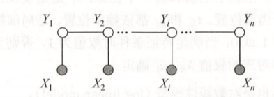

4. crf
1. 概率无向图
又称马尔可夫随机场 (
- 贝叶斯网络通过有向无环图对变量之间的依赖建模，善于表达随机变量间的因果关系；条件独立假设 $\Leftrightarrow$ 按有向图箭头分解 $\prod P(X|\pi(X))$
- 马尔可夫随机场不知道变量之间如何相关，直接对联合概率建模，善于表达随机变量间的软限制；马尔可夫性假设 $\Leftrightarrow$ 最大团分解
(1). 马尔可夫性
- 全局: 设结点集 $A、B$ 被 $C$ 分开，则对应的变量集满足: $\mathrm{X} _ {A} \perp \mathrm{X} _ {B} \mid \mathrm{X} _ {C}$
($A$ 中结点到 $B$ 中结点都必须经过 $C$ 中某个结点) - 局部: 变量与其他变量关于邻接变量独立，$\mathrm{X} _ {v} \perp \mathrm{X} _ {V-n(v)-v} \mid \mathrm{X} _ {n(v)}$
- 成对: 非邻接变量关于其他变量条件独立，$\mathrm{X} _ {u} \perp \mathrm{X} _ {v} \mid \mathrm{X} _ {V-\lbrace u,v\rbrace}$
由此可定义
定义: 设联合分布 $P(Y)$ 由无向图 $G=(V,E)$ 表示，结点表示随机变量，边表示变量之间的依赖关系。若 $P(Y)$ 满足 (全局) 马尔可夫性，就称此联合分布为概率无向图模型。
(2). 因子分解 $(\mathrm{factorization})$
对于无向图中一个结点子集，若任两点均有边连接，称该子集为一个团 (
定理: (Hammersley-Clifford 定理) 概率无向图 $P(Y)$ 可表示为:
$\displaystyle P(Y) = \frac{1}{Z} \prod_C \psi_C(Y_C), \qquad Z = \sum_Y \prod_C \psi_C(Y_C)$其中 $C$ 是无向图的极大团，$Y_C$ 是其对应的随机变量，$\psi$ 是严格正的势函数
(3). 势函数
- 势函数 $\psi_C(Y_C)$ 的作用是刻画变量集 $Y_C$ 中变量之间的相关关系程度，它没有明确的概率意义，这也使得它比有向图更灵活。
- 由于需要非负和归一化，常由指数函数定义: $\psi_C(Y_C) = e^{-H_C(Y_C)}$，称 $H$ 为能量函数，最终结果可以通过各最大团的能量和求得
- 能量函数常见形式为 $\displaystyle H_C(Y_C) = \sum_{u,v\in C,u\ne v} \alpha_{uv} t_{uv}(u, v) + \sum_{v\in C} \beta_v s_v(v)$
2. 条件随机场
(1). 定义
定义: 若 $Y$ 构成一个由无向图 $G=(V,E)$ 表示的MRF ，即下式对任意 $v\in V$ 成立:$\displaystyle P(Y_v \mid X,Y_{V-v}) = P(Y_v\mid X,Y_{n(v)})$就称条件概率分布 $P(Y\mid X)$ 为条件随机场常用的结构为符合下图的线性链
CRF 
其满足 $P(Y\mid X,Y_1,...,Y_{i-1},Y_{i+1},...,Y_n) = P(Y\mid X, Y_{i-1}, Y_{i+1})$，可参数化表示为:
$\displaystyle P(Y|X) = \frac{1}{Z(X)} \exp \left( \sum_{k,i} \lambda_k t_{ki} (Y_{i-1},Y_i,X,i) + \sum_{l,i}\mu_l s_{li} (Y_i,X,i) \right)$
- $t_k (Y_{i-1},Y_i,X,i)$: 相邻标记的转移特征函数
- 刻画了相邻标记变量的相关关系，由于对条件概率建模，也需要考虑 $X$ 的影响
- 需要考虑位置变量 $i$ 的影响，例如，(代词，动词) 出现在序列头部的可能性大
- $s_l (Y_i,X,i)$: 标记位置 $i$ 上的状态特征函数
- 也需要考虑位置变量 $i$，例如 名词 出现在序列头部的可能性大
以词性标注为例，特征函数举例:
$\displaystyle t_{j}\left(Y_{i}, Y_{i+1}, X, i\right)=\left\{\begin{array}{ll} 1, & \text { if } \quad Y_{i+1}=[\mathrm{P}], Y_{i}=[\mathrm{V}] \text { and } X_{i}=\text { "knock" } \\ 0, & \text { otherwise } \end{array}\right. $
$\displaystyle s_{k}\left(Y_{i}, X, i\right)=\left\{\begin{array}{ll} 1, & \text { if } Y_{i}=[\mathrm{V}] \text { and } X_{i}=" \text { knock" } \\ 0, & \text { otherwise } \end{array}\right. $(2). 简化形式
设有 $K_1$ 个转移特征，$K_2$ 个状态特征，首先表示所有的特征函数
$f_{ki}(Y_{i-1}, Y_{i}, X, i)=\left \lbrace \begin{array}{ll} t_{ki}\left(Y_{i-1}, Y_{i}, X, i\right), & k=1,2, \cdots, K_{1} \\ s_{li}\left(Y_{i}, X, i\right), & k=K_{1}+l ; \quad l=1,2, \cdots, K_{2} \end{array}\right.$然后对所有位置求和:
$\displaystyle f_k(Y,X) = \sum_{i=1}^n f_{ki}(Y_{i-1},Y_i,X,i),\quad k=1,2,...,K$并且用 $w_k$ 表示其权值:
$w_{k}=\left\{\begin{array}{ll} \lambda_{k}, & k=1,2, \cdots, K_{1} \\ \mu_{l}, & k=K_{1}+l ; \quad l=1,2, \cdots, K_{2} \end{array}\right.$原式可表示为
$\displaystyle P_w(Y|X) = \frac {\exp (\mathbf{w} \cdot \mathbf{F}(Y, X))} {Z_w(X)}$其中
$\mathbf{w} = (w_1,w_2,...,w_K)^\mathrm{T}$， $\mathbf{F}(Y,X) = (f_1(Y,X), ... ,f_K(Y,X))^\mathrm{T}$(3). 预测算法
问题可表示为 $\displaystyle Y^ * = \argmax_Y P_w(Y|X) = \argmax_Y (\mathbf{w}\cdot \mathbf{F}(Y, X))$，即求非规范化概率的最长路径，因此使用
Viterbi 算法。为统一描述，引入两个人工标记: $y_0 = \mathrm{start},\ y_{n+1} = \mathrm{stop}$
记 $\mathbf{F} _ i(Y _ {i-1}, Y _ i, X) = (f _ {1i} (Y _ {i-1}, Y _ i, X, i), \ ...)^\mathrm{T}$令 $\delta(i, j) = $ 截至位置 $i$，以第 $j$ 个标记 $y_j$ 结尾的最长路径。则算法流程如下:
- $(1).$ 初始化:
$\displaystyle \delta(1, j) = \mathbf{w} \cdot \mathbf{F}_1(Y_0 = \mathrm{start},\ Y_1 = y_j,\ X),\quad j=1,2,...,m $- $(2).$ 递推:
$\displaystyle \delta(i, k) = \max _ {1\leq j \leq m} \lbrace \delta(i-1, j) + \mathbf{w}\cdot \mathbf{F} _ i (Y _ {i-1}=y _ j,\ Y _ i = y _ k,\ X)\rbrace $- $(3).$ 终止:
$\displaystyle \max _ {Y}(\mathbf{w} \cdot \mathbf{F}(Y,X)) = \max _ {1\leq j\leq m} \delta(n, j)$(4). 矩阵形式
假设标记变量 $Y$ 的取值范围 $\lbrace 1,2,...,m \rbrace$，极大团 $\lbrace Y_i,\ Y_{i+1} \rbrace$ 的势为:
$\displaystyle M_i(Y_i=p, Y_{i+1}=q \mid X) = \exp\left(\sum_{k=1}^K w_k f_k(Y_i=p, Y_{i+1}=q, X, i) \right)$表示成矩阵形式:
$\displaystyle \mathbf{M}_{i}(X)=\left[\begin{array}{cccc} M_{i}\left(1, 1 \mid X\right) & M_{i}\left(1, 2 \mid X\right) & \cdots & M_{i}\left(1, m \mid X\right) \\ M_{i}\left(2, 1 \mid X\right) & M_{i}\left(2, 2 \mid X\right) & \cdots & M_{i}\left(2, m \mid X\right) \\ \vdots & \vdots & \ddots & \vdots \\ M_{i}\left(m, 1 \mid X\right) & M_{i}\left(m, 2 \mid X\right) & \cdots & M_{i}\left(m, m \mid \mathbf{X}\right) \end{array}\right]_{m \times m} $特别地，
$\displaystyle \mathbf{M}_{0}(X)=\left[\begin{array}{cccc} M_{0}\left(\mathrm{start}, 1 \mid X\right) & \cdots & M_{0}\left(\mathrm{start}, m \mid X\right) \\ 0 & \cdots & 0 \\ \vdots & \ddots & \vdots \\ 0 & \cdots & 0 \end{array}\right] $
$\displaystyle \mathbf{M}_{n}(X)=\left[\begin{array}{cccc} M_{n}\left(1, \mathrm{stop} \mid X\right) & \cdots & 0 & 0 \\ \vdots & \ddots & \vdots & \vdots \\ M_{n}\left(m, \mathrm{stop} \mid X\right) & \cdots & 0 & 0 \end{array}\right] $